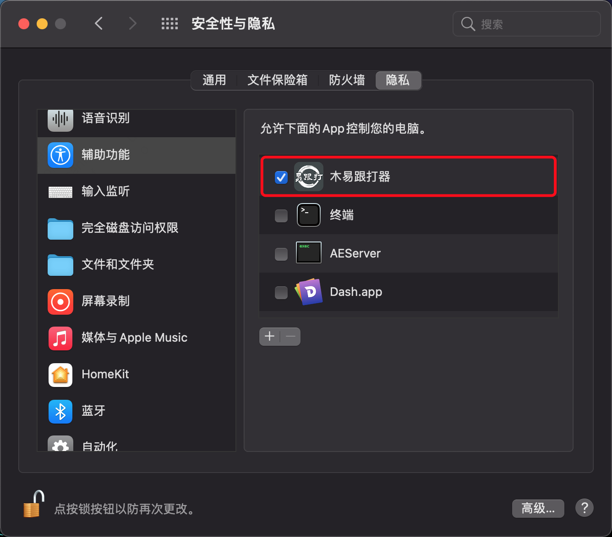

因为需要载文，在系统偏好设置-安全性与隐私-辅助功能中，允许木易跟打器控制电脑

同时由于QQ macOS版本的限制，无法全文获取，可通过以下方式载文
F4载入文本F4：激活QQ聊天窗口，从当前鼠标位置载文（确保鼠标在需要载文的消息上面）Cmd + V：从剪切板载文F2：发文Ctrl + L：乱序Ctrl + P：下一段F3：重打Esc：暂停Enter: 继续由于QQ macOS版本的限制，无法全文获取。可将鼠标移至聊天窗口对应消息位置，按F4载入文本。
F4即可潜水 模式